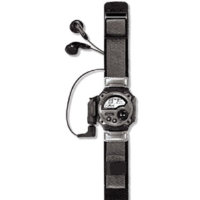
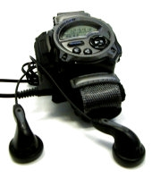
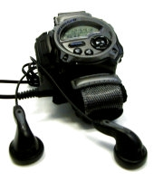

wmp-manager v0.1
Updated Dld (local)
WMP Manager v.0.2
Casio WMP-1 - A guided tourFor years the Casio WMP-1 has lacked any form of software. In 2003 Martin Kiewitz released his software for the OS/2 operating system. His code was in January 2005 used to build the WMP Manager for Linux by Florian Schmidt. Download the software in all its glory here! (Link on the left) ThenI was staying in Berlin the fall of 2000 and at that time, MP3 was all the rage. So I wanted a player I could carry round, and what was more perfect than the WMP-1? 32MB wasn't all that much back then, but I never ran that far anyway:) Coming home I soon realised that it was a waste trying to make it function under linux. After a while the watch fell into a drawer and stayed there. NowI used some time every year to search for news, but it wasn't till January this year I noticed a litte email on the usb-devel list from Florian Schmidt requesting help to build a driver for the Casio WMP-1. Some further searching led me to the os/2 driver released a mere year earlier. I sent Florian an email asking him whether he had heard of this driver, which he had not, and at which he requested a copy. So I sent him the source found on the net, and a mere week (and some:) he sent me a working copy of what is called wmp-manager! Two minutes later I was copying over Fela Kuti, and grinning all over! The software also enables UPLOADS! This means you can use it as a portable usb-storage device, using it for _all_ kinds of files. Open Source CAN do better than closed source, and this shows it! It runs by means of libusb (that's a dependancy!), so no kernel recompile is required. It runs in userspace, but to get it working I need to set it suid root (in other words "chown root wmp_manager;chmod +s wmp_manager"). ENJOY and remember to send Florian an email if you use it! His email is in the README. Update: The download on the sourceforge site is not up to date per 2005-04-18. The version on the right is updated to handle ID3V2 tags. We are now featured on the CasioNova blog! (ca. 2006 I guess). More info here. |

 

|
<Fooz> In a perfect world... spammers would get caught, go to jail, and share a cell with many men who have enlarged their penises, taken Viagra and are looking for a new relationship. |